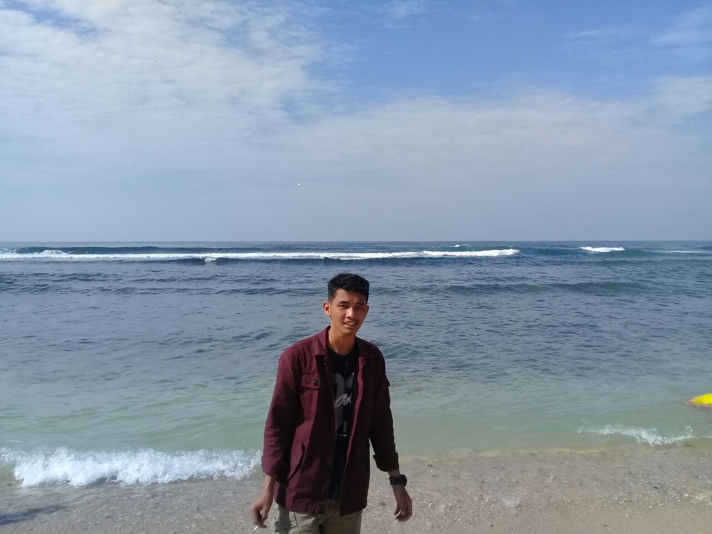

01

01 / Tentang saya
Teknologi yang dekat dengan kebutuhan nyata.
Ruang untuk memperkenalkan cara berpikir, bekerja, dan terus bertumbuh.
02
Cara saya bekerja
02 / Keahlian
Skill yang terus saya kembangkan.
Daftar ini bersumber dari content/skills.json agar mudah diperbarui melalui GitHub.
03 / Pengalaman kerja
Belajar dari tanggung jawab sehari-hari.
Pengalaman operasional yang membentuk ketelitian dan tanggung jawab.
04 / Fokus
Area yang sedang saya bangun.
Fokus ini menjadi dasar dokumentasi kerja berikutnya.
05 / Dokumentasi proyek
Setiap proyek punya cerita.
Halaman ini siap diisi setelah detail proyek dikonfirmasi.
06 / Mari terhubung
Punya ide atau peluang kerja sama?
Untuk kerja sama, peluang proyek, atau kolaborasi, silakan hubungi saya.